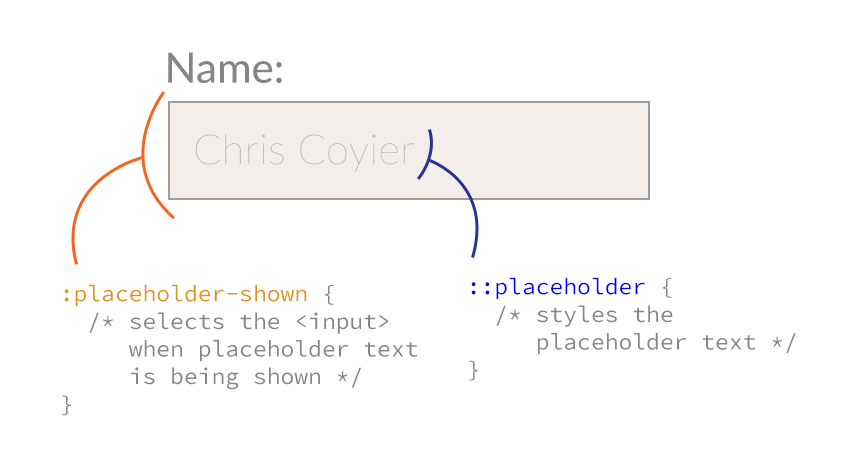
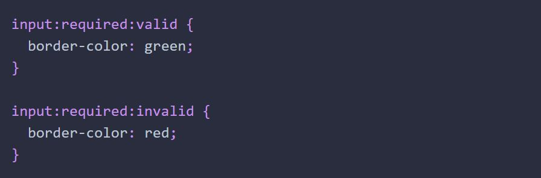
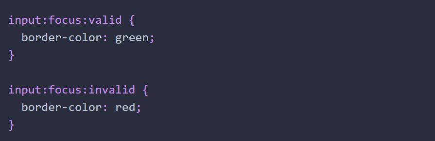

Существует набор псевдоклассов, созданных специально для элементов форм, и не оказывающих никакого эффекта на другие типы элементов. С помощью этих псевдоклассов можно стилизировать поля по валидности введённых данных, обязательности заполнения поля и другим состояниям.
По названию понятно, что эти псевдоклассы выбирают элементы по атрибуту disabled. Данные псевдоклассы можно использовать на элементах input, select и button. Элементы формы активны по умолчанию. Они отключаются только, если установлен атрибут disabled.
Селектор button:enabled найдет все кнопки без атрибута disabled. И наоборот, селектор button:disabled найдет все кнопки с атрибутом disabled.
Применяется только к радиокнопкам и чекбоксам. По имени понятно, что данный псевдокласс позволяет стилизовать выбранные (отмеченные) поля.
Сделаем так, чтобы при выборе чекбокса, текст связанной метки становился зелёным и жирным. Для этого необходимо чтобы тег
Эти псевдоклассы можно использовать на элементах range, number и date. Для того чтобы они работали, на элементах должны быть использованы атрибуты min и max.
Создадим форму заказа с полем для ввода количества товаров. Если ввести число меньше 1 или больше 100, цвет рамки инпута поменяется на красный. Если значение остается в рамках диапазона, цвет будет зелёным.
У этой группы селекторов есть ограничения. Цвет рамки инпута в примере сразу зелёный, то есть значения из селектора :in-range применяются еще до ввода какого-либо значения в инпут. Как решить эту проблему разберёмся дальше.
Эти псевдоклассы выбирают элемент по наличию или отсутствию атрибута required у элемента. Браузеры показывают, что поле обязательно только после отправки формы. Псевдокласс :required позволяет стилизировать поле и показать пользователю, что поле обязательно еще до отправки данных.
Проблемы такие же как и у предыдущей группы псевдоклассов - стили применяются еще до ввода какого-либо значения.
С помощью этих псевдоклассов можно стилизовать поля формы по определенным условиям валидности введённых значений. Проверочные ограничения накладываются с помощью атрибутов type и pattern. Например, поле с type="email" не пройдет валидацию, если пользователь введет строку mangomail.
Опять же, проблемы со стилизацией - стили применяются еще до ввода значения.
Селектор для стилизации инпута в зависимости от видимости его плейсхолдера - значения указанного в атрибуте placeholder. Начните вводить текст в поля формы и цвет рамки поля изменится на синий как только введённый текст заменит плейсхолдер.
Обратите внимание на то, что текст плейсхолдера необычно большой и розовый. Эти стили были добавлены в селекторе .form-input::placeholder - это псевдоэлемент для стилизации плейсхолдера. Не путайте его с псевдоклассом :placeholder-shown.
Для того чтобы частично решить проблему применения стилей до ввода значений в поле, можно использовать комбинацию селекторов :required и :valid. При помощи CSS можно показывать лишь положительный результат, когда валидно обязательное к заполнению поле.
Изначально рамка будет чёрной, а при вводе валидного значения станет зелёной. Этот подход не решает проблему стилизации невалидного поля, так как пустое и обязательное (required) поле не валидно по умолчанию, стили из селектора input:required:invalid применятся сразу.
Можно попробовать применить комбинации :focus и :valid, но тогда поле будет получать стили только при фокусе, что тоже не совсем то, что нужно.
А вот если добавить плейсхолдер, и скомбинировать :placeholder-shown, :valid и :invalid, получим именно то, что нужно. Пока поле пустое, есть плейсхолдер и селектор не применяется. Как только что-то ввели и плейсхолдер пропал - происходит валидация и применяется селектор.
Для более сложной валидации и оформления результатов нужна дополнительная разметка, язык программирования JavaScript и хорошее понимание Constraint validation API. Настраивать валидацию в HTML нет смысла, такое решение не масштабируется и плохо поддерживается.
Применяется к элементу, когда он сам или элементы внутри него получают фокус. В отличие от :focus, который применяется непосредственно к самому элементу, :focus-within работает для предков. Это позволяет применить стили на метку, форму или отдельные её части, когда пользователь взаимодействует с полями.
Добавим эффект появления тени на всей форме и изменим цвет текста метки на синий при получении фокуса полем.
Это новый селектор из спецификации CSS 4-й версии, которая в данный момент находится в стадии разработки.
Для того чтобы выбрать label для оформления, нужно поставить его после тега input.
С помощью такого селектора .form-input:focus + .form-label { }.
Он выберет эоемент с классом form-label, который идёт после элемента с классом form-input при :focus.
В домашке это пригодится для того чтобы при фокусе изменить цвет иконки, и возможно сдвинуть label.
Если label стоит визуально внутри инпута, и при фокусе уезжает наверх, с помощью transformY при фокусе. То как только фокус снимется, label приедет обратно поверх введенных данных.
Чтобы это вылечить нужно для input задать placeholder (просто с пробелом, если не нужен, такой вот хак) и применить сложный селектор
form-input:focus + form.label,
.form-input:not(:placeholder-shown) + .form-label { transformY(-...px) }.
Который буквально означает, что сделай transformY для form-label идущего после form-input при фокусе на form-input или когда у form-input не видно placeholder.
Есть ещё один селектор типа "+", это Тильда "~". + выбирает следующего соседа, а тильда выбирает всех под
следющих соседей.
В совсременном CSS4 что за чем стоит в разметке абсолютно не важно. Но она пока ещё на стандартизирована между браузерами.